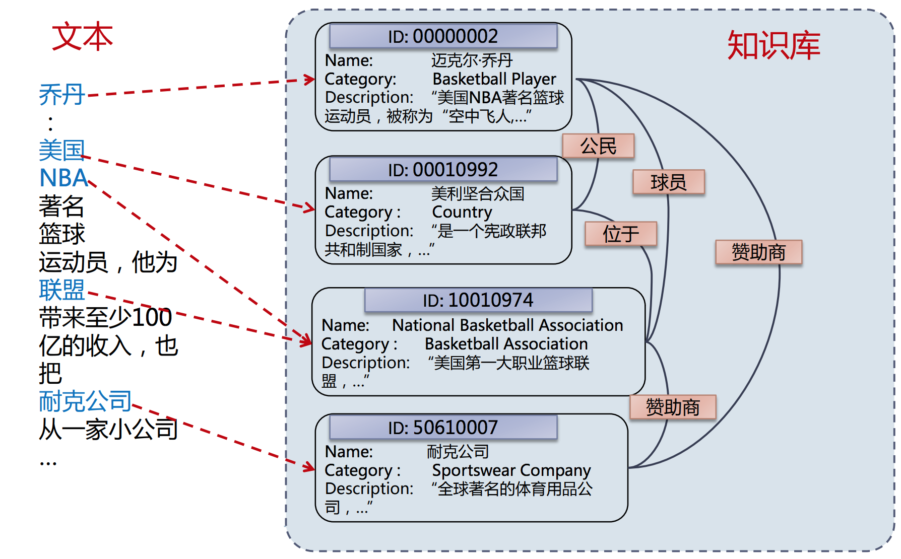
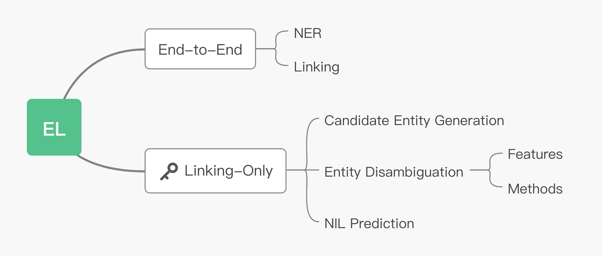
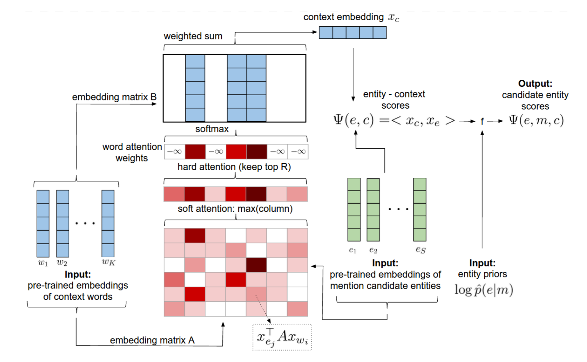
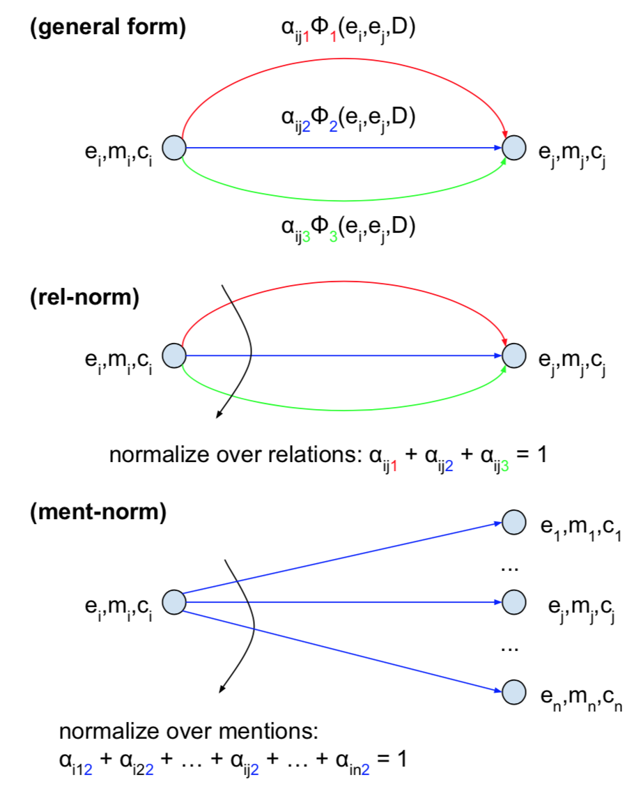
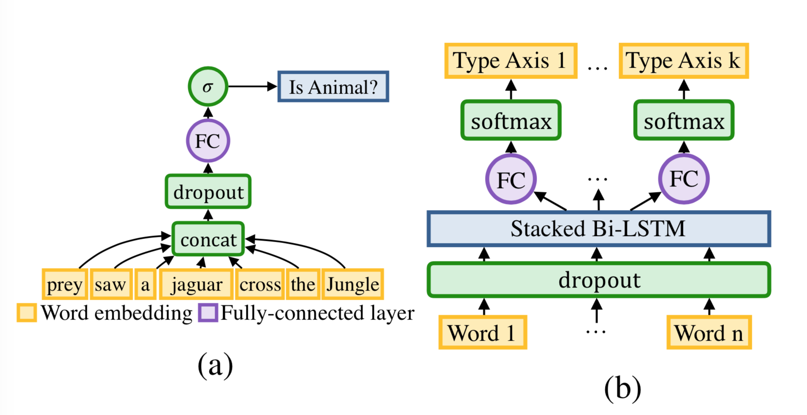

这个世界充斥着无数的结构化数据（wiki）和非结构化数据（web），然而，如何将两者有效地集成仍然是个非常困难的问题。
本文介绍实体链接 (Entity Linking) 这一技术方向，会先从最基础的概念讲起，然后对EL中的三个主要模块做一个清晰的梳理。在此基础上，选取三篇比较有代表性的论文，详述其中的核心方法和思想。
EL入门
1. 任务定义
实体链接，就是把文本中的mention链接到KG里的entity的任务。如下图所示[1]：

有些读者可能对知识图谱的概念不甚了解，这边先解释一下图谱里常用的一些概念。
- Knowledge Graph (知识图谱)：一种语义网络，旨在描述客观世界的概念实体及其之间的关系，有时也称为Knowledge Base (知识库)。
- 图谱由三元组构成：
<实体1，关系，实体2>或者<实体，属性，属性值>； - 例如：<姚明，plays-in，NBA>、<姚明，身高，2.29m>；
- 常见的KB有：Wikidata、DBpedia、YOGO。
- 图谱由三元组构成：
- Entity (实体)：实体是知识图谱的基本单元，也是文本中承载信息的重要语言单位。
- Mention (提及)：自然文本中表达实体的语言片段。
回过头再看，上面的这个图中，“乔丹”、“美国”、“NBA”这些蓝色的片段都是mention，其箭头所指的“块块”就是它们在图谱里对应的entity。
2. 几个应用
EL有什么用呢？一般有KB的地方就离不开EL。以下是EL的几个应用[2]：
- Question Answering：EL是KBQA的刚需，linking到实体之后才能查询图数据库；
- Content Analysis：舆情分析、内容推荐、阅读增强；
- Information Retrieval：基于语义实体的搜索引擎，google搜索一些实体，右侧会出现wikipedia页面；
- Knowledge Base population：扩充知识库，更新实体和关系。
3. Taxonomy

大体来说，EL的工作可以分为两类[3]：
- End-to-End：先从文本中提取到实体mention (即NER)，对应到候选实体，然后将提取到的entities消除歧义，映射到给定的KB中。
- Linking-Only：与第一种方法对比，跳过了第一步。该方法直接将text和mention作为输入，找到候选实体并消除歧义，映射到给定的KB中。
由于端到端的工作比较少，且NER也没太多可讲的。本文着重介绍Linking-Only的相关技术方向和工作。
EL的三大模块
EL的工作非常有挑战性，主要有两个原因：
- Mention Variations：同一实体有不同的mention。（<科比>：小飞侠、黑曼巴、科铁、蜗壳、老科。）
- Entity Ambiguity：同一mention对应不同的实体。（“苹果”：中关村苹果不错；山西苹果不错。）
针对上述两个问题，一般会用Candidate Entity Generation (CEG) 和Entity Disambiguation (ED) 两个模块[2]来分别解决：
- Candidate Entity Generation：从mention出发，找到KB中所有可能的实体，组成候选实体集 (candidate entities)；
- Entity Disambiguation：从candidate entities中，选择最可能的实体作为预测实体。
下面我们来讲讲这两个模块里都有些啥东西。其中，CEG的方法都比较朴素，没什么可讲的，笔者会把重点放在ED上。
1. Candidate Entity Generation (CEG)
- 最重要的方法：Name Dictionary (
{mention: entity})- 哪些别名：首字母缩写、模糊匹配、昵称、拼写错误等。
- 构建方法：
- Wikipedia（Redirect pages, Disambiguation pages, Hyperlinks）；
- 基于搜索引擎：调google api，搜mention。若前m个有wiki entity，建立map；
- Heuristic Methods；
- 人工标注、用户日志。
CEG这部分，最主流也最有效的方法就是Name Dictionary，说白了就是配别名。虽然CEG很朴素，但作为EL任务中的第一道门槛，其重要性不言而喻。对于每一个entity，紧凑而充分地配置别名，才能保证生成的candidate entites没有遗漏掉ground truth entity。
具体的，要配置哪些别名，要用什么构建方法，往往取决于EL的使用场景。比如做百科问答或是通用文本的阅读增强，就很依赖于wikipedia和搜索引擎；但如果是某个具体的行业领域，就需要通过一些启发式的方法、用户日志、网页爬取，甚至人工标注的方法来构建Name Dictionary。
2. Entity Disambiguation (ED) (手动划重点)
- Features
- Context-Independent Features：
- LinkCount：#(m->e)，知识库中某个提及m指向实体e的次数；
- Entity Attributes：Popularity、Type；
- Context-Dependent Features：
- Textual Context：BOW, Concept Vector
- Coherence Between Entities：WLM、PMI、Jaccard Distance
- Context-Independent Features：
实体消歧时，不同场景的特征选取是非常重要的。总的来说，实体消歧的特征分为，context独立和context不独立的。
特征里，独立的有：mention到实体的LinkCount、实体自身的一些属性（比如热度、类型等等）。其中，LinkCount作为一个先验知识，在消歧时，往往很有用，比如当我们在问“姚明有多高？”时，大概率都是在问<篮球运动员姚明>，而不是其他不为人知的“姚明”。虽然context中完全没有包含篮球运动员这一信息，但大多数情况下，根据“姚明”到<篮球运动员姚明>的LinkCount最高，选其作为实体进行查询，都会是一个不错的答案。
不独立的有：文本的context、实体间的coherence (一致性)。这部分，可深入挖掘的东西比较多，文本context可以用一些深度学习的方法去深度理解文本的语义，从而实现消歧；实体间的一致性更加有趣，由于文本包含的所有的mention都没有确定，所以全局地进行entities的消歧实际上是一个NP-hard的问题。因此，如何更加快速有效地利用一致性特征，是一个非常有趣的方向。
基于这些常用的特征，消歧的方法可以大致分为以下几种：
- Methods
- Learning to Rank Methods：Point-wise、Pair-wise、List-wise。由于ED任务ground truth只有一个实体，一般都是用point-wise来做。输入是文本的context、mention、某个entity的一些attributes，输出mention指向该entity的置信度，以此rank，选出最可信的entity；
- Probabilistic Methods：Incorporate heterogeneous knowledge into a probabilistic model。结合不同信息，得到条件概率$P(e|m, c)$，其中 c 是输入文本，e 为实体， m 是mention。比如用归一化的LinkCount信息，作为先验概率$P(e|m)$；
- Graph-Based Approaches：maximize coherene between entities。利用图特征 (entity embedding、relation)，在消歧时，考虑全局消歧后实体的一致性；
一般来说，现在的ED工作都会综合以上的方法来设计，后面我们会具体介绍几篇近期的论文，大家可以对照这三类方法看看。
3. 还有个小问题：Unlinkable Mention Prediction
除了上面的两大模块，还有一个小问题，就是如何拒识掉未知实体，毕竟你不可能建立一个能穷举万物的KB。这就涉及到Unlinkable Mention Prediction，不是很复杂，一般就三种做法：
- NIL Threshold：通过一个置信度的阈值来卡一下；
- Binary Classification：训练一个二分类的模型，判断Top-rankeded Entity是否真的是文中的mention想要表达的实体；
- Rank with NIL：在rank的时候，在候选实体中加入NIL Entity。
一般就阈值卡一下就好了，不是太大的问题。但如果具体的场景是做KB Population且实体还不是很全的时候，就需要重点关注一下了。
EL的近期工作
为了让读者能更清楚地了解EL，笔者在这里选取了三篇近两年出的，比较有代表性的工作[4] [5] [6]，给大家具体讲讲：
- Deep Joint Entity Disambiguation with Local Neural Attention. (Ganea and Hofmann, 2017, EMNLP)
- Improving entity linking by modeling latent relations between mentions. (Le et al., 2018, ACL)
- DeepType: multilingual entity linking by neural type system evolution. (Raiman et al., 2018, AAAI)
1. Deep Joint Entity Disambiguation with Local Neural Attention
早期的EL工作都非常依赖manually-designed的特征，这篇文章是EL领域第一篇不依赖特征工程，用深度学习来学习基础特征的工作。主要的创新点和关键部件有三个：
- Entity Embeddings：用到了知识库里实体的embedding；
- Context Attention：用attention机制来获得context的表征；
- Collective Disambiguation：考虑实体间的coherence，联合消歧。
给定文本$D$，其中有一堆mention $(m_1, m_2, … , m_n)$ 。$m_i$ 对应的实体为$e_i$，对应的context为$c_i$，对应的候选实体集为$C_i = (e_{i1}, …, e_{il_i})$。文章提出了两种模型：Local model、Global model。local只考虑mention的context；global还需要考虑实体间的一致性，联合消歧。
Local model：令$\Psi(e_i, c_i)$为local score function，local model要解决的问题即：
Global model：除了context，还考虑实体间的coherence (为了简化，只考虑两元一致性）。令$\Phi(e_i, e_j, D)$为实体之间的pair-wise coherence score function，$E = (e_1, …., e_n)$，全局搜索：
Local and pair-wise score function 的计算方法如下：
其中，$\mathbf{e}_i, \mathbf{e}_j \in \mathbb{R}^d$ 是实体$e_i, e_j$的embedding，$\mathbf{B}, \mathbf{R} \in \mathbb{R}^{d \times d}$ 是对角矩阵。$f(c_i)\in \mathbb{R}^d$是在上下文 $c_i$上取attention后的表征，具体的attention计算如下图所示：

这里是用candidate entity embeddings做key，context word embeddings做value，得到score matrix之后，按列取max，如果某个word的score较高表示这个word至少和一个entity相关度高。为了去除stop words的影响，作者只取了top R的score，剩下的置为负无穷。
得到score后，还会结合m到e的LinkCount先验概率，计算出最终各个实体的概率。该工作在AIDA数据集上取得了SOTA ( local: 88.8、global: 92.22 )。
2. Improving entity linking by modeling latent relations between mentions
上一篇论文开创性地在EL中引入entity embedding作为信息，很自然的，我们会思考一个问题，KB中还有别的可利用的信息吗？参考本文一开始的那张图片，“乔丹”、“美国”、“Nike”这些实体之间还有着“公民”、“赞助商”等关系信息，显然，若加以利用，一定能成大器。
于是Le et al.在Ganea and Hofmann工作的基础上，增加了隐关系信息。假定图谱中有K个关系，令 $(m_i, m_j)$之间为关系k的置信度为$\alpha_{ijk}$，上文中的pair-wise coherence score function可以写成：
其中，$\mathbf{R}_k, \mathbf{D}_k \in \mathbb{R}^d$都是用来表示关系k的对角矩阵 (类似于关系k的embedding)，$Z_{ijk}$为归一化因子，$f(m_i, c_i)$ 为将$(m_i, c_i)$映射到$\mathbb{R}^d$的函数。这样一来，我们就隐式地添加了关系k，丰富了计算全局实体一致性时所参考的信息。
看起来很fancy！但是有一个问题，这个归一化因子我们要咋算呢？作者提供了两种思路：
- Rel-norm：Relation-wise normalization。就是以关系k维度来norm；
- Ment-norm：Mention-wise Normalization。就是以实体j维度来norm。

看一下上面这张图，就很清晰了。该工作在AIDA数据集上得到了新的SOTA (global: 93.07)。
3. DeepType: multilingual entity linking by neural type system evolution
前两篇论文都是在联合消歧的这个角度，做了一定的工作。DeepType这篇文章则另辟蹊径，从优化知识库的type系统来做。文章很重要的一个观点是：当我们能预测出实体mention的type，消歧这个任务就做的差不多了。EL系统主要分成三个模块：
- Type System：一组正交的type轴和一个type标注函数；
- type轴：一组互斥的type集合 $\mathcal{A}$ (e.g. $\text{IsHuman} \cap \text{IsPlant} = \{\}$)
- type标注函数：$\{t_1, …, t_k\} = \text{TypeLabeler}(e, \mathcal{A})$
- 举个例子，假定一个包含两个轴 {IsA, Topic} 的 type 系统，<追一科技>对应的就是 {公司，人工智能}
- Type Classifier：给定mention和text，输出mention对应实体的type；
- Entity Prediction Model：给定mention、text和候选实体，预测概率最高的实体。（文中直接用的LinkCount）
很显然，这三个模块的核心点在于Type System的构建。由于Entity Prediction Model是直接用的LinkCount，实际上整个EL系统就只有两组参数，一组是Type System的离散参数$\mathcal{A}$，一组是Type Classifier的连续参数$\theta$。给定text及其所含的mention $M=\{(m_0, e_0^{GT}, \mathcal{E}_{m_0}), …, (m_n, e_n^{GT}, \mathcal{E}_{m_n})\}$ ，其中$e_i^{GT}$为ground truth的实体，$\mathcal{E}_{m_i}$为候选实体集，令$S_{model}(\mathcal{A}, \theta)$为EL系统的消歧准确率，则我们的问题可以定义为：
其中$e^*=\underset{e \in \mathcal{A}}{\text{argmax}} \;\text{EntityScore}(e,m,D,\mathcal{A},\theta)$，这个entity score可以看成是给定m后，EL系统给出的置信度，后面会给具体公式。
同步优化两组参数很耗时，因此文章分成Type System和Type Classfier两个部分独立优化。
a. Discrete Optimization of Type System：
为了避免同时训练Type System和Type Classifier，我们得先固定classifier，然后优化Proxy Objective $J(\mathcal{A})\sim S_{model}(\mathcal{A}, \theta)$，这里我们假设两个classifier model的极端：
- Oracle (极端优秀)：假设Type Classifier开了天眼，不管$\mathcal{A}$咋变，都能预测对mention的type，然后从该type对应的候选实体集的子集中选LinkCount最高的，令$P(e|m)=\frac{\text{LinkCount}(m,e)}{\sum_{j\in \mathcal{E}_m}\text{LinkCount}(m,j)}$；
- Greedy (极端蠢)：不预测type，直接从候选实体集中选linkcount最高的。
最简单的思路直接$J(\mathcal{A}) = S_{oracle}$其实就完事了，但是我们要考虑到真正的classifier并没有开天眼，假设classifier的Learnability（学习能力）是 $l(\mathcal{A})$，那么更合理的目标函数应该是：
但是怎么才能不依赖$\mathcal{A}$ 去计算学习能力呢，如果是用softmax多分类，那就糟了，每换一次$\mathcal{A}$，就得重新训练一个classifier。因此作者巧妙的用二元分类器代替了多分类，令$l(\mathcal{A})=\sum_{t\in \mathcal{A}}AUC(t)/|\mathcal{A}|$，这样就只需要最开始计算一次就好了，如下图所示：

b. Type Classifier
就按照上图b优化就是了，没什么可说的。
c. Inference
在训练完Type System和Type Classifier之后，我们就可以计算我们上面说的EntityScore了：
其中$\mathcal{A}=(t_1, …, t_k)$ 是k个type组成type轴，$\alpha,\beta \in (0,1)$是smoothing系数。最终在AIDA数据集上取得了新的SOTA（94.88）。
4. 三篇论文效果对比和思考
| Paper | Micro-Precision (AIDA CoNLL-YAGO Dataset) |
|---|---|
| Raiman et al. (2018) | 94.88/ ? |
| Le et al. (2018) | 88.8/93.07 |
| Ganea and Hofmann (2017) | 88.8/92.22 |
前两篇都是联合消歧的，而DeepType其实是个Local模型。这么看来，如果考虑联合消歧的话，应该还会有提升。
总结
Entity Linking其实算是个很复杂的技术领域，因为优化过程中，不仅要考虑text的文本信息、KB的信息、消歧后的一致性，还需要根据具体的业务场景采用不同的方案，同时也不能为了效果去暴力搜索NP-hard的离散优化问题。在具体实施的过程中不可能面面俱到，需要一定程度的trade-off。总结起来，四大特征：LinkCount、Context、Attributes、Coherence。方法千千万，大家灵活运用。
Appendices
- 数据集：
- Knowledge Base：Wikipedia, YAGO, DBpedia, Freebase；
- EL监督数据：
- 一个不错的多因子消歧总结：https://cloud.tencent.com/developer/article/1491361
- ccks实体链接第一名方案：https://github.com/panchunguang/ccks_baidu_entity_link
- DeepType原作博客 (有一些可玩的插件)：https://openai.com/blog/discovering-types-for-entity-disambiguation/
References
- 韩先培，实体链接：从文本到概念：https://docs.huihoo.com/infoq/baidu-salon51-entity-links.pdf
- Wei Shen, Jiawei Han: Entity Linking with a Knowledge Base: Issues, Techniques, and Solutions. http://dbgroup.cs.tsinghua.edu.cn/wangjy/papers/TKDE14-entitylinking.pdf
- Sebastian Ruder: NLP Progress of Entity Linking. https://github.com/sebastianruder/NLP-progress/blob/master/english/entity_linking.md
- Ganea and Hofmann, 2017, EMNLP: Joint Entity Disambiguation with Local Neural Attention. https://arxiv.org/abs/1704.04920Deep
- Le et al., 2018, ACL: Improving entity linking by modeling latent relations between mentions. https://arxiv.org/abs/1804.10637
- Raiman et al., 2018, AAAI: DeepType: multilingual entity linking by neural type system evolution. https://arxiv.org/abs/1802.01021